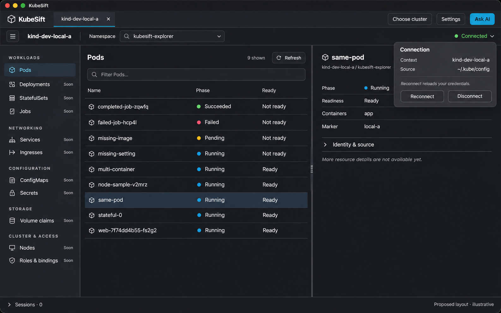
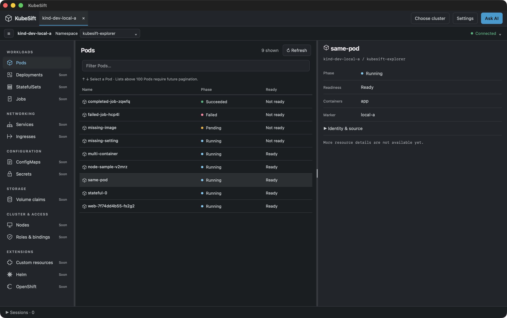
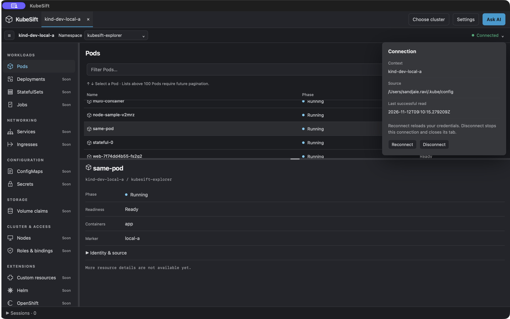
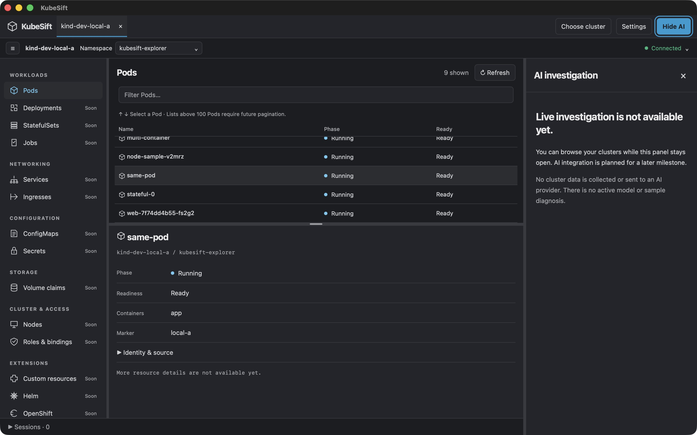

The selected layout combines the resource explorer and evidence-based right-side AI panel. AI remains Phase 2. These static references guide visual implementation; behavior is owned by the UX specification.
The 12 November Phase 1C.2 UAT refinement adds desktop-work-area maximization on launch and aligned inventory pagination, and removes the inventory capture timestamp. The UX specification owns these changes; earlier captures below predate this refinement.
Accepted workload detail direction · 13 November
The user accepted the following synthetic mockups as the detail redesign direction. They are illustrative, not runtime evidence. The written specification governs behavior, edge states and the additional ReplicaSets scope. Logs is outside these mockups.
- Interactive Events mockup and capture.
- Interactive Pod/Deployment Overview, YAML and Pods mockups and Overview capture. Switch the sample resource to Deployment for its Pods tab.


Search and navigation in these prototypes are illustrative. No cluster access, application implementation or native acceptance is implied.
Current approved mock · Compact workspace
Approved on 12 November 2026: two header rows, connection actions inside the status disclosure, Refresh beside Pods, coloured phase dots and compact details. The generated image is illustrative; flat semantic colours and actual data remain authoritative. Running is blue to distinguish phase from readiness.

Implemented compact workspace
Native packaged captures with existing local fixtures. See the validation report for coverage limits.



What changed
- 5 November: initial wide Dark and stacked Light concepts established the explorer and right-side AI layout.
- 12 November: neutral dark surfaces, searchable namespaces and remembered detail dividers replaced the initial styling and controls.
- Compact follow-up: two header rows replaced the extra toolbars; connection actions moved into the status menu, Refresh moved beside Pods, and phase dots and compact details improved scanning.
- Light correction: Running now uses a dedicated blue token; Succeeded retains green. Dark colours are unchanged.
Superseded images were removed; the approved current mock and three current native captures remain. Generated examples are illustrative, not capability evidence. AI remains unavailable.